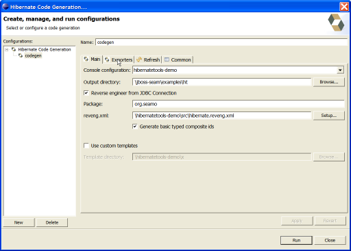

General
Hibernate Tools Core improvements
In this release most of the changes/improvements have been done at the core of Hibernate tools. The changes for Hibernate Tools are listed in our JIRA in the Change log.
Some of the documentation is not yet uptodate with the newest functionallity - expect to see a beta3 soon that improves that
Editors
Column name completion
If you have chosen a default hibernate configuration in your project properties then you will now get column name completion (together with the existing table name completion)

Wizards
New Code Generation Launcher
Previously we had a "Artifiact Generation Wizard", this have now been replaced with a "Code Generation Launcher".

Using the Eclipse launcher framework instead of just having a wizard, gives a better fit since it gives the user the option to create different "code generation configurations" with individual names and it provides a much better framework for extension in the Hibernate plugins.

JBoss Seam exporter
This release brings the first version of an exporter that generates a basic CRUD JBoss Seam application.
Note: It is still a work in progress so use with care.